Teaching the computer
to remember things
Variables & Data Types — the building blocks of our University Portal project.
A 2-hour hands-on session · building toward your project
What we learned last time
#include
Load a library
main
Where it starts
cout
Print to screen
;
Ends a statement
Our project needs to remember things
Your University Portal stores a lot of information:
A Student
name, student number, year of study, GPA…
A Course
course code, title, credits, semester…
A Grade
marks, feedback, pass or fail…
Every one of these is data stored in variables.
Both groups build the University Portal
Same system, two focuses. Each group owns one side — then they connect.
Group A — Student & Courses
Registration & login, enrolling in courses, viewing your courses, attendance. Centred on the Student and Enrollment.
Group B — Teaching & Grades
Creating assignments, collecting submissions, grading & feedback, class reports. Centred on the Lecturer and Grade.
What you'll be able to do
Variables
Create named boxes that hold data.
Data types
Pick int, double, char, bool, text.
Input
Read what the user types with cin.
Model a Student
Combine it all into a real record.
What is a variable?
A named box where your program keeps a piece of data.
A variable is a labelled box
Think of the computer's memory as a wall of boxes. A variable is one box that:

Has a name
So you can find it again — like age or gpa.
Holds a value
The data inside — like 20 or 3.75.
Can change
That's why it's "variable" — the value can vary.
age → [ 20 ]
How to make one
int age = 20;int
The type — what kind of data (a whole number).
age
The name — how you refer to the box.
= 20
The value — what goes inside.
Once it has a name, use it anywhere
int age = 20;
cout << "You are " << age << " years old." << endl;
age = 21; // change the value
cout << "Next year: " << age << endl;Next year: 21
Your first variable
Run it. Then change the number, and add a second variable of your own.
The main data types
Different data needs different boxes.
Five types you'll use all the time
int vs double
int credits = 6; // whole number — no decimals
double gpa = 3.75; // decimal number
int year = 2;
double tuition = 1499.99;Use int for…
Counts: credits, year of study, number of students.
Use double for…
Measurements: GPA, average mark, money.
char and bool
char grade = 'A'; // ONE character, in single quotes
bool isEnrolled = true; // only true or falsechar
A single letter or symbol. Single quotes: 'A', not "A".
bool
A yes/no switch. Perfect for "is the student enrolled?"
💡 Tip: click the underlined words above for a quick explanation.
One student, four types
Run it. Then change the values to describe yourself as a student.
Storing text
Names, titles, feedback — a Portal is full of text.
A word fits in a char[] box
char name[40] = "Sara";
cout << "Student: " << name << endl;A char[40] is a box that holds up to 40 characters — enough for a name. The [40] is the maximum size.
Meet std::string
#include <string> // needed for string
using namespace std;
string name = "Sara Khan"; // holds a whole name, any length
string course = "Software Engineering";Any length
No fixed [40] — it grows to fit the text.
Easy to use
Join, compare, and measure text simply. We'll go deep in Lecture 8.
Store a student's name
Run it. Then change the name and add the student's program (e.g. "SoftwareEng").
Asking the user
A Portal is only useful if real people can enter their data.
Read input with cin
int age;
cout << "Enter your age: ";
cin >> age; // store what they type into age
cout << "You are " << age << endl;cout <<
Arrows point OUT — send to the screen.
cin >>
Arrows point IN — read into a variable.
Read several values at once
char name[40];
int year;
cout << "Name and year of study: ";
cin >> name >> year;
cout << name << " is in year " << year << endl;Chain >> to read several things in order. The user types them separated by spaces.
A mini registration form
The input box is pre-filled (Sara 2 3.75). Run it — then change the welcome message.
Rules & good habits
A few things that save you from bugs.
The whole-number trap
int total = 7;
int count = 2;
cout << total / count << endl; // prints 3, not 3.5 !Fix: make at least one a double → 7.0 / 2 gives 3.5.
Clear names & const
Name for meaning
gpa and yearOfStudy beat x and y. Future-you will thank you.
const = never changes
const int PASS_MARK = 50; — a value fixed for the whole program.
Which type for a student's GPA?
What prints?
int credits = 6;
credits = credits + 3;
cout << credits;Build it: a Student record
Put every type together — the first real piece of the Portal.
Your Student Record Card
Starter stores the data. You add the average and the pass check. (Input pre-filled: Sara 1024 2 80 60)
How the record works
double average = (mark1 + mark2) / 2.0; // decimals kept
bool passed = average >= 50;
cout << "==== STUDENT RECORD ====" << endl;
cout << "Name: " << name << endl;
cout << "Number: " << number << endl;
cout << "Year: " << year << endl;
cout << "Average: " << average << endl;
cout << "========================" << endl;/ 2.0 keeps decimals
80 and 60 average to 70.0, not 70 by luck.
bool passed
A comparison gives true/false — the seed of decisions (Lecture 4).
That's a real record
Group A's Student and Group B's gradebook row both start exactly here.
One Portal, two halves
The same system seen from two sides. Each group owns one half — and they share the Student and the Course.
Group A — the student's side
Register, log in, browse & enrol in courses, see your timetable, mark attendance.
Group B — the lecturer's side
Create assignments, collect submissions, grade them, give feedback, print class reports.
What Group A is building
The student experience
A student signs up, logs in, finds courses, enrols, and checks their attendance — all from the console.
What it must remember
Students, the courses on offer, who enrolled in what, and each day's attendance.
Four things to model
Student
name, number, year, GPA
Course
code, title, credits, seats
Enrollment
which student, which course
Attendance
present today? yes / no
A Student — as variables
// one student, using today's types
string name = "Sara Khan"; // text
int number = 1024; // whole number
int year = 2; // year of study
double gpa = 3.75; // decimals
bool active = true; // enrolled now?string name
Any text — in the full compiler.
int number, year
Counts — no decimals needed.
bool active
A yes/no flag — the start of real logic.
A Course — as variables
string code = "CS101"; // course code
string title = "Intro to C++";
int credits = 6; // ECTS credits
int seats = 30; // places available
bool isOpen = true; // can students still enrol?What happens when a student enrols
Your sequence diagram is just this story, step by step. Each step reads or changes a variable.
1 · Log in
Check the student's number and password.
2 · Browse courses
Show each Course where isOpen == true and seats > 0.
3 · Enrol
Make an Enrollment, and do seats = seats - 1.
4 · Mark attendance
Each class: set bool present for the day.
What Group B is building
The lecturer experience
A lecturer creates an assignment, students submit, the lecturer grades each one and gives feedback.
What it must remember
Assignments, every submission, the grade and feedback, and a class report at the end.
Four things to model
Lecturer
name, staff ID
Assignment
title, max marks, due
Submission
which student, when
Grade
marks, feedback, pass?
An Assignment — as variables
string title = "Lab 1: Hello World";
string course = "CS101";
int maxMarks = 100; // out of 100
int weight = 10; // % of final grade
bool isOpen = true; // still accepting work?A Grade — as variables
int studentNo = 1024; // whose grade
double marks = 82.5; // the score (decimals!)
string feedback = "Great work, tidy code.";
bool passed = marks >= 50; // automatic pass checkdouble marks
82.5 — the /2.0 lesson, for real.
bool passed
A comparison fills it in — no typing yes/no.
string feedback
Text back to the student.
What happens when work is graded
Your sequence diagram, in four steps — each one touches a variable.
1 · Create assignment
Set title, maxMarks, isOpen = true.
2 · Student submits
Record a Submission with the student's number.
3 · Grade it
Set marks, then passed = marks >= 50.
4 · Class report
Average all marks — a double, of course.
From loose variables to a real class
Today each thing is separate variables. Soon you'll bundle them so one Student carries all its data at once:
struct Student {
string name;
int number;
double gpa;
bool active;
}; // Lecture 9 — don't worry yet!Lecture 9
Structs & objects — bundle the variables.
Lecture 7
Vectors — a list of students, not just one.
Lecture 10
Files — save the Portal so it remembers.
Your task before we build more

1 · List your variables
For each class in your diagram, write down every piece of data and pick its C++ type (int / double / char / bool / string).
2 · Code one object
Pick your main class (Student for A, Assignment for B) and store one real example in variables — like we just did.
3 · Agree on shared names
Both groups: settle on number for a student and code for a course, so your halves connect.
4 · Save it
Keep the file — it's the first real brick of your Portal.
What you learned today
Concepts
Variables are named boxes. Each type (int, double, char, bool, string) fits a different kind of data.
Skills
You declared variables, read input with cin, avoided the int-division trap, and modelled a real Student record.
Today's vocabulary — click any word for a reminder
int
Whole number
double
Decimal
char
One letter
bool
true / false
string
Text
cin
Read input
const
Never changes
=
Assign a value
Practice (15–20 min)
Model a Course
Store course code, title, credits and semester in the right types, and print a course card.
Compute an average
Three test marks → print the average as a double. Watch the / 3.0!
Save it
Add these to your code folder — they're pieces of the project.
Lecture 3 — Operators & Expressions
Today you stored data. Next time you'll compute with it — the maths behind grades, averages and fees.
- Arithmetic: + − × ÷ and remainder
- Comparisons: is this mark a pass?
- Build a grade calculator for the Portal